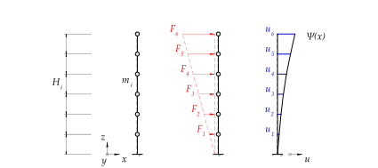

%run style_and_packages.ipynb19 Beispiel: Rayleigh-Quotient an einem Sechsmassenschwinger beim Ersatzkraftverfahren
19.1 Aufgabenstellung
Das Beispiel ist aus Dupraz und Schweizerischer Ingenieur-und Architekten-Verein (2004) Seite 77 entnommen. Die Lastermittlung wird übernommen. Es wird vom vereinfachten Modell in Abbildung 19.1 ausgegangen. Der Fokus liegt auf der Bestimmung der Grundfrequenz.

Gesucht:
- Erstelle die Nachgiebigkeitsmatrix (Verwende das Bildungsgesetz)
- Grundschwingzeit
Gegeben:
H_i, m_i, I, I_x, I_y, f= sp.symbols('H_i, m_i I I_x I_y f')
n = 6 # n-Massenschwinger
F = sp.MatrixSymbol('F', n,1)
u = sp.MatrixSymbol('u', n,1)
f_hat = sp.MatrixSymbol('\hat{f}', n,n)
M = sp.MatrixSymbol('M', n,1)params={
E: 27*10**9*unit.N/ unit.m**2,
H_i: 3.105*unit.m,
m_i: 1278*10**3*unit.N*unit.second**2 /unit.m,
I_x: 14.89*unit.m**4,
I_y: 28.27*unit.m**4,
}
params_plot = convert.param_value(params)
render.dict_to_table(params)| \(E = \frac{27000000000 \text{N}}{\text{m}^{2}}\) | \(H_{i} = 3.105 \text{m}\) |
| \(I_{x} = 14.89 \text{m}^{4}\) | \(I_{y} = 28.27 \text{m}^{4}\) |
| \(m_{i} = \frac{1278000 \text{N} \text{s}^{2}}{\text{m}}\) |
19.2 Musterlösung
19.2.1 Rayleigh-Quotient
rl_eqs={
}def nachgiebigkeitsmatrix_nach_bildungsgesetz(n):
"""
Erstellt die Nachgiebigkeitsmatrix nach dem Bildungsgesetz. Dieses ist nur zulässig für gleichmässige Stockwerkshöhen, sowie gleichbleibenden Stockwerkssteifigkeiten.
Dies muss abschliessend mit h^3/(6*E*I) mutlipliziert werden.
"""
from sympy import symbols, zeros
def bildungsgesetz(i,j):
return j**2*(3*i-j)
matrix = sp.zeros(n, n)
matrix_symbols =sp.zeros(n,n)
matrix_unsymm = sp.zeros(n, n)
for i in range(1,n+1):
for j in range(1,n+1):
if i >=j:
matrix[i-1,j-1] = bildungsgesetz(i,j)
matrix_symbols[i-1,j-1] = sp.Symbol(f'f_{i,j}')
matrix_unsymm[i-1,j-1] = bildungsgesetz(i,j)
if j>i:
matrix[i-1, j-1] = bildungsgesetz(j,i)
matrix_symbols[i-1,j-1] = sp.Symbol(f'f_{i,j}')
return matrix, matrix_symbols, matrix_unsymm
rl_eqs[f_hat] = sp.UnevaluatedExpr(H_i**3/(6*E*I))*nachgiebigkeitsmatrix_nach_bildungsgesetz(n)[0]
rl_eqs[F] = sp.Matrix(list(range(1, n+1)))
rl_eqs[u] = f_hat * Frl_eqs[M] = sp.ones(n,1)*m_irl_eqs[f] = sp.Mul(sp.UnevaluatedExpr(1 / (2*sp.pi)),sp.sqrt(sp.Sum(sp.HadamardProduct(F, u)[i,0], (i, 0, F.shape[0]-1)) / sp.Sum(sp.HadamardProduct(M,u.applyfunc(lambda x:x**2))[i,0],(i,0,M.shape[0]-1))), evaluate=False)
rl_eqs[T] = 1 / fMittels dem Rayleigh-Quotient für das vereinfachte Modell lässt sich die Grundfrequenz direkt bestimmen.
render.eq_display(
f,rl_eqs[f],
F, rl_eqs[F],
M, rl_eqs[M],
T, rl_eqs[T],
)\[\begin{equation}f = \frac{1}{2 \pi} \sqrt{\frac{\sum_{i=0}^{5} \mathbf{F}_{i, 0} \mathbf{u}_{i, 0}}{\sum_{i=0}^{5} \mathbf{M}_{i, 0} \mathbf{u}_{i, 0}^{2}}}\end{equation}\]
\[\begin{equation}\mathbf{F} = \left[\begin{matrix}1\\2\\3\\4\\5\\6\end{matrix}\right]\end{equation}\]
\[\begin{equation}\mathbf{M} = \left[\begin{matrix}m_{i}\\m_{i}\\m_{i}\\m_{i}\\m_{i}\\m_{i}\end{matrix}\right]\end{equation}\]
\[\begin{equation}T = \frac{1}{f}\end{equation}\]
Dabei entspricht \(\mathbf{u}\) dem Verschiebungsvektor infolge des Kraftvektors \(\mathbf{F}\). Der Verschiebungsvektor kann mittels Nachgiebigkeitsmatrix bestimmt werden.
19.2.1.1 Nachgiebigkeitsmatrix
Für gleichbleibende Geschosshöhen und Geschosssteifigkeiten lässt sich die Nachgiebigkeitsmatrix leicht mittels dem Bildungsgesetz in Gleichung 19.1 ermitteln.
\[ \hat{f}_{i,j} = \frac{H^3}{6EI} \cdot j^2(3i-j) \text{ für } i\geq j \tag{19.1}\]
\(\hat{\mathbf{f}}\) entspricht der Nachgiebigkeitsmatrix mit den Einträgen \(\hat{f}_{i,j}\).
Beachte dabei, dass die Gleichung 19.1 nur für \(i\geq j\) gilt. Die Einträge entsprechen folgendem Schema:
display(nachgiebigkeitsmatrix_nach_bildungsgesetz(n)[1])\[\begin{equation}\left[\begin{matrix}f_{(1, 1)} & f_{(1, 2)} & f_{(1, 3)} & f_{(1, 4)} & f_{(1, 5)} & f_{(1, 6)}\\f_{(2, 1)} & f_{(2, 2)} & f_{(2, 3)} & f_{(2, 4)} & f_{(2, 5)} & f_{(2, 6)}\\f_{(3, 1)} & f_{(3, 2)} & f_{(3, 3)} & f_{(3, 4)} & f_{(3, 5)} & f_{(3, 6)}\\f_{(4, 1)} & f_{(4, 2)} & f_{(4, 3)} & f_{(4, 4)} & f_{(4, 5)} & f_{(4, 6)}\\f_{(5, 1)} & f_{(5, 2)} & f_{(5, 3)} & f_{(5, 4)} & f_{(5, 5)} & f_{(5, 6)}\\f_{(6, 1)} & f_{(6, 2)} & f_{(6, 3)} & f_{(6, 4)} & f_{(6, 5)} & f_{(6, 6)}\end{matrix}\right]\end{equation}\]
Unter strikter Anwendung von Gleichung 19.1 folgt daraus:
display(nachgiebigkeitsmatrix_nach_bildungsgesetz(n)[2])\[\begin{equation}\left[\begin{matrix}2 & 0 & 0 & 0 & 0 & 0\\5 & 16 & 0 & 0 & 0 & 0\\8 & 28 & 54 & 0 & 0 & 0\\11 & 40 & 81 & 128 & 0 & 0\\14 & 52 & 108 & 176 & 250 & 0\\17 & 64 & 135 & 224 & 325 & 432\end{matrix}\right]\end{equation}\]
Aufgrund von Symmetrie kann diese abschliessend über die Diagonale gespiegelt werden:
render.eq_display(f_hat/sp.UnevaluatedExpr(H_i**3 /(6*E*I)), nachgiebigkeitsmatrix_nach_bildungsgesetz(n)[0])\[\begin{equation}\frac{6 E I}{H_{i}^{3}} \mathbf{\hat{f}} = \left[\begin{matrix}2 & 5 & 8 & 11 & 14 & 17\\5 & 16 & 28 & 40 & 52 & 64\\8 & 28 & 54 & 81 & 108 & 135\\11 & 40 & 81 & 128 & 176 & 224\\14 & 52 & 108 & 176 & 250 & 325\\17 & 64 & 135 & 224 & 325 & 432\end{matrix}\right]\end{equation}\]
Durch Multiplikation der Nachgiebigkeit mit der Einwirkung resultiert die Deformation.
render.eq_display(u, rl_eqs[u],
u, calcs.subs_recursive(u, rl_eqs),
u, calcs.subs_recursive(u, rl_eqs).doit())\[\begin{equation}\mathbf{u} = \mathbf{\hat{f}} \mathbf{F}\end{equation}\]
\[\begin{equation}\mathbf{u} = \left[\begin{matrix}2 \frac{H_{i}^{3}}{6 E I} & 5 \frac{H_{i}^{3}}{6 E I} & 8 \frac{H_{i}^{3}}{6 E I} & 11 \frac{H_{i}^{3}}{6 E I} & 14 \frac{H_{i}^{3}}{6 E I} & 17 \frac{H_{i}^{3}}{6 E I}\\5 \frac{H_{i}^{3}}{6 E I} & 16 \frac{H_{i}^{3}}{6 E I} & 28 \frac{H_{i}^{3}}{6 E I} & 40 \frac{H_{i}^{3}}{6 E I} & 52 \frac{H_{i}^{3}}{6 E I} & 64 \frac{H_{i}^{3}}{6 E I}\\8 \frac{H_{i}^{3}}{6 E I} & 28 \frac{H_{i}^{3}}{6 E I} & 54 \frac{H_{i}^{3}}{6 E I} & 81 \frac{H_{i}^{3}}{6 E I} & 108 \frac{H_{i}^{3}}{6 E I} & 135 \frac{H_{i}^{3}}{6 E I}\\11 \frac{H_{i}^{3}}{6 E I} & 40 \frac{H_{i}^{3}}{6 E I} & 81 \frac{H_{i}^{3}}{6 E I} & 128 \frac{H_{i}^{3}}{6 E I} & 176 \frac{H_{i}^{3}}{6 E I} & 224 \frac{H_{i}^{3}}{6 E I}\\14 \frac{H_{i}^{3}}{6 E I} & 52 \frac{H_{i}^{3}}{6 E I} & 108 \frac{H_{i}^{3}}{6 E I} & 176 \frac{H_{i}^{3}}{6 E I} & 250 \frac{H_{i}^{3}}{6 E I} & 325 \frac{H_{i}^{3}}{6 E I}\\17 \frac{H_{i}^{3}}{6 E I} & 64 \frac{H_{i}^{3}}{6 E I} & 135 \frac{H_{i}^{3}}{6 E I} & 224 \frac{H_{i}^{3}}{6 E I} & 325 \frac{H_{i}^{3}}{6 E I} & 432 \frac{H_{i}^{3}}{6 E I}\end{matrix}\right] \left[\begin{matrix}1\\2\\3\\4\\5\\6\end{matrix}\right]\end{equation}\]
\[\begin{equation}\mathbf{u} = \left[\begin{matrix}\frac{42 H_{i}^{3}}{E I}\\\frac{925 H_{i}^{3}}{6 E I}\\\frac{950 H_{i}^{3}}{3 E I}\\\frac{1535 H_{i}^{3}}{3 E I}\\\frac{2173 H_{i}^{3}}{3 E I}\\\frac{5663 H_{i}^{3}}{6 E I}\end{matrix}\right]\end{equation}\]
Durch Einsetzen der bestimmten Verformung in die Gleichung der Eigenfrequenz folgt:
render.eq_display(f, calcs.subs_recursive(f, rl_eqs).doit(),
T, calcs.subs_recursive(T, rl_eqs).doit())\[\begin{equation}f = \frac{\sqrt{43665341610} \sqrt{\frac{E I}{H_{i}^{3} m_{i}}}}{4993178 \pi}\end{equation}\]
\[\begin{equation}T = \frac{\sqrt{43665341610} \pi}{8745 \sqrt{\frac{E I}{H_{i}^{3} m_{i}}}}\end{equation}\]
19.2.2 Grundschwingzeit
19.2.2.1 X-Richtung
Es gilt \(I\) mit \(I_y\) zu substituieren.
u_j_x = calcs.subs_recursive(u, rl_eqs).doit().subs(I, I_y)
f_x = calcs.subs_recursive(f, rl_eqs).doit().subs(I, I_y)
T_x = calcs.subs_recursive(T, rl_eqs).doit().subs(I,I_y)
render.eq_display(I_y, I_y.subs(params),
sp.MatrixSymbol('\mathbf{u_x}', n,1), u_j_x.evalf(3),
sp.MatrixSymbol('\mathbf{u_x}', n,1), u_j_x.subs(params).evalf(3),
)\[\begin{equation}I_{y} = 28.27 \text{m}^{4}\end{equation}\]
\[\begin{equation}\mathbf{\mathbf{u_x}} = \left[\begin{matrix}\frac{42.0 H_{i}^{3}}{E I_{y}}\\\frac{154.0 H_{i}^{3}}{E I_{y}}\\\frac{317.0 H_{i}^{3}}{E I_{y}}\\\frac{512.0 H_{i}^{3}}{E I_{y}}\\\frac{724.0 H_{i}^{3}}{E I_{y}}\\\frac{944.0 H_{i}^{3}}{E I_{y}}\end{matrix}\right]\end{equation}\]
\[\begin{equation}\mathbf{\mathbf{u_x}} = \left[\begin{matrix}\frac{1.65 \cdot 10^{-9} \text{m}}{\text{N}}\\\frac{6.05 \cdot 10^{-9} \text{m}}{\text{N}}\\\frac{1.24 \cdot 10^{-8} \text{m}}{\text{N}}\\\frac{2.01 \cdot 10^{-8} \text{m}}{\text{N}}\\\frac{2.84 \cdot 10^{-8} \text{m}}{\text{N}}\\\frac{3.7 \cdot 10^{-8} \text{m}}{\text{N}}\end{matrix}\right]\end{equation}\]
Und für die Grundfrequenz:
render.eq_display('f_x', f_x.subs(params).evalf(3),
'T_x', T_x.subs(params).evalf(3))\[\begin{equation}f_{x} = \frac{1.88}{\text{s}}\end{equation}\]
\[\begin{equation}T_{x} = 0.531 \text{s}\end{equation}\]
19.2.2.2 Y-Richtung
Es gilt \(I\) mit \(I_x\) zu substituieren.
u_j_y = calcs.subs_recursive(u, rl_eqs).doit().subs(I, I_x)
f_y = calcs.subs_recursive(f, rl_eqs).doit().subs(I, I_x)
T_y = calcs.subs_recursive(T, rl_eqs).doit().subs(I,I_x)
render.eq_display(I_x, I_x.subs(params),
sp.MatrixSymbol('\mathbf{u_y}', n,1), u_j_y.evalf(3),
sp.MatrixSymbol('\mathbf{u_y}', n,1), u_j_y.subs(params).evalf(3),
)\[\begin{equation}I_{x} = 14.89 \text{m}^{4}\end{equation}\]
\[\begin{equation}\mathbf{\mathbf{u_y}} = \left[\begin{matrix}\frac{42.0 H_{i}^{3}}{E I_{x}}\\\frac{154.0 H_{i}^{3}}{E I_{x}}\\\frac{317.0 H_{i}^{3}}{E I_{x}}\\\frac{512.0 H_{i}^{3}}{E I_{x}}\\\frac{724.0 H_{i}^{3}}{E I_{x}}\\\frac{944.0 H_{i}^{3}}{E I_{x}}\end{matrix}\right]\end{equation}\]
\[\begin{equation}\mathbf{\mathbf{u_y}} = \left[\begin{matrix}\frac{3.13 \cdot 10^{-9} \text{m}}{\text{N}}\\\frac{1.15 \cdot 10^{-8} \text{m}}{\text{N}}\\\frac{2.36 \cdot 10^{-8} \text{m}}{\text{N}}\\\frac{3.81 \cdot 10^{-8} \text{m}}{\text{N}}\\\frac{5.39 \cdot 10^{-8} \text{m}}{\text{N}}\\\frac{7.03 \cdot 10^{-8} \text{m}}{\text{N}}\end{matrix}\right]\end{equation}\]
Und für die Grundfrequenz:
render.eq_display('f_y', f_y.subs(params).evalf(3),
'T_y', T_y.subs(params).evalf(3))\[\begin{equation}f_{y} = \frac{1.37}{\text{s}}\end{equation}\]
\[\begin{equation}T_{y} = 0.732 \text{s}\end{equation}\]
19.2.3 Abminderung der Steifigkeit
Um die Rissbildung zu berücksichtigen, wird die Steifigkeit auf 30 % abgemindert.
19.2.3.1 X-Richtung
f_x_red = f_x.subs(E,0.3*E)
T_x_red = T_x.subs(E,0.3*E)
render.eq_display('f_xred', f_x_red.subs(params).evalf(3),
'T_x_red', T_x_red.subs(params).evalf(3))\[\begin{equation}f_{xred} = \frac{1.03}{\text{s}}\end{equation}\]
\[\begin{equation}T_{x red} = 0.97 \text{s}\end{equation}\]
19.2.3.2 Y-Richtung
f_y_red = f_y.subs(E,0.3*E)
T_y_red = T_y.subs(E,0.3*E)
render.eq_display('f_yred', f_y_red.subs(params).evalf(3),
'T_y_red', T_y_red.subs(params).evalf(3))\[\begin{equation}f_{yred} = \frac{0.748}{\text{s}}\end{equation}\]
\[\begin{equation}T_{y red} = 1.34 \text{s}\end{equation}\]